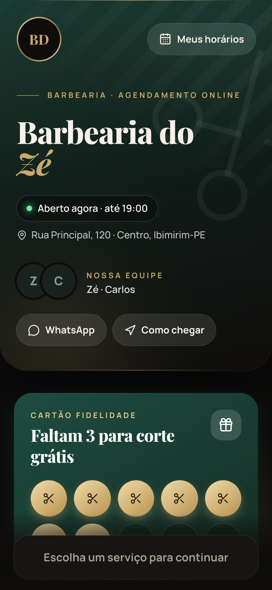

PERGUNTAS · 01/05
PERGUNTAS · 01/05O QUE MAIS CHEGA NO NOSSO DIRECT
"Quanto custa
um sistema pro
meu negócio?"
Respondemos as 4 perguntas mais comuns. Sem enrolação. 👉

tresktecnologia.com.brArraste →
PERGUNTAS · 01/05Respondemos as 4 perguntas mais comuns. Sem enrolação. 👉

02/0503/0504/05Não. A gente entrega funcionando, no celular, e mostra como usar. Se você usa WhatsApp, você usa um sistema da Tresk.
 05/05
05/05Manda no direct. A gente responde, sem compromisso. 💬